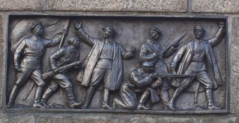

Игра №51
Тип игры: Закрытая
Описание: Первая Кировоградская сХватка!
Принадлежности: Ум! Смекалка! Сообразительность! Крайне необходимы!
Уровень 1.
Задание Полевое :
Каждый сХватчик должен быть общительным, не предвзятым и смелым.
Именно по этому сейчас произойдет тест на общительность.
Вам нужно будет провести опрос у общественности в точке сбора сХватчиков, и когда вы туда приедете вы несомненно сможете увидеть все «просторы вселенной», взобраться до небес и спуститься обратно в век технического прогресса и многое другое, ищите открытую местность.
Вам не обходимо провести опрос среди масс «Храните ли вы деньги в сберегательной кассе?» После того как вы зададите вопрос агенту, он отдаст вам код!
На другие фразы он не риагирует!!!
сх+код
P.S. ВСЕ коды во ВСЕХ заданиях пишуться маленькими(прописными) буквами

Уровень 2.
Задание Полевое :
В желтом кармане лежит что-то белое. Эта вещь стоит 743,72 грн. Какого она размера?
В ответе использовать математические сокращение велечин.
Пример:
метры - м
километры - км
сх+размер
Уровень 3.
Задание Полевое :
сХватчик должен знать точные науки. Там где геометрическая фигура является тяжелой ношей, спрятано слово, от которого нужно отнять животное и прибавить полученное к цветку-наркомана, результатом этой арифметической операции и будет код.
Ищем недалеко от места!
сх+полученый вычеслениями код
схсимвол, тоесть просто слово символ. мак+(символ-вол)=максим, тоесть код схмаксим.
Уровень 4.
Задание Полевое :
Назови фамилии троих -
Меценатов щедрых,
Там где над широкими простороми воды,
Возвышаеться подобие мечты...
Там где волны плещут не поплыть,
Там где крылья есть, но не взлететь...
Коды в иминительном падеже!!! Без пробелов!!! Пишем маленькими буквами!!! Сверху вниз!!!
*Отжешь сам вместо них все ответы и написал*
сх+коды
Уровень 5.
Задание Полевое :
Будь я на вашем месте и мне пришлось бы искать это, я скорей всего принял это за мачту, проходивших здесь кораблей. И так номер этого – 496 или 499, код написан после пятиугольной звезды.
P.S. Номер на этом написан не верно 6 разветрнута в другую сторону! Повторяю это 6-ка только написано не правильно!
сх+код
Уровень 6.
Задание Полевое :
Все уходит, все проходит,
Только это не погаснет
И о прошлом нам напомнит,
Мрак и холод разгоняя.
Тени серые застыли -
Тоже памяти осколки,
Судьбы чьи-то непростые…
Мысли, чувства… Судеб сколько?
Число пичем в текстово варианте!
Пример: схдва
сх+код
Уровень 7.
Задание Полевое :
И так пришло время порыться в памяти и вспомнить самый популярный пейзаж города Кировограда, его можно было видеть на календарях блокнотах, встречались они даже на дневниках и телевиденье. Вспомнили? А теперь подумайте откуда он был сделан. И так дорога вам именно туда. На месте ищите сток канализации (Прыгать во внутыть НЕ нада =) также как и кудато лезть) на нем символы это и будет код. Код написан синей краской
P.S. Символ «.» Замените на телеграфную кодировку.
P.S. Лезть никуда не надо наоборот прийдеться по-присидать. Код написан низко.
сх+код
И рассвет там для определенный групп, там как нельзя прекрасен!
Уровень 8.
Задание Полевое :
И снова нашим сХватчикам придется искать среди деревьев, теперь для них главным ориентиром будет "ракета", "пушка", и "персонаж из сказки", который выделялся своими габаритами посравнению с другими.
Код написан на манжете этого персонажа БОЛЬШИМИ ЛАТИНСКИМИ буквами заметить их можна тока в упор буквы пости сантимерт высотой. Хоть слов там и много но вам предстоит найти ключевое. (код вводим маленькими(прописными) буквами все на тойже латинеце)
сх+код
Уровень 9.
Задание Полевое :
Отвечу не тая, сегодня вы там уже были и всех "людей" вы там пощитали, но черт его знает зачем вам нужно ехать туда опять, но долг есть долг. Вам нужно найти звезду и считать от нее против часовой Y-столбцов и Х-строк с верху вниз. Код только первое слово!
Столбец=Y
Строка=Х
Y+Х=42, а Y-Х=16.
Код будет такого типа: сх+Y+код+Х, Y и Х пощитаные вами числа, код пишем маленькими(прописными) буквами.
сх+код
Уровень 10.
Задание Полевое :

На этом, таких вещей несколько. Вам необходимо выяснить количество людей на каждой, потом перемножить эти цифры и разделить на количество таких "табличек".
сх+цифра

Это находится совсем не далеко!